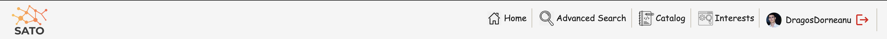
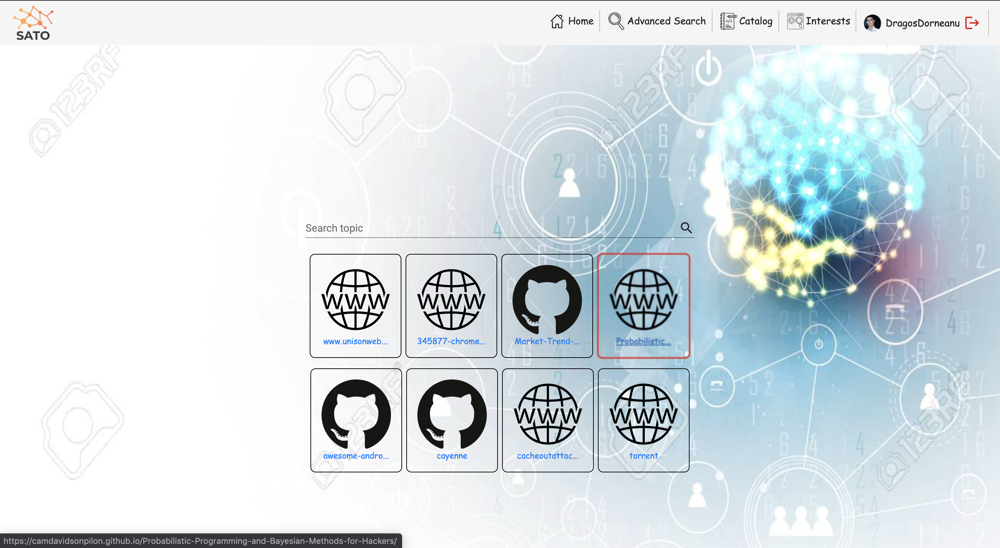
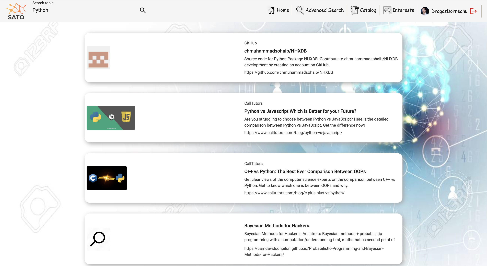

Application Screens
General Overview
The SATO service offers to its customers six screens that each has a different scope in the
application context.
Each of the screens can be accessed from anywhere in the application via the application menu bar
which is perfect for switching from a context or activity to another.
Below can be seen an image of the complete menu bar that can be used by a logged in user.
Take note of the username and the profile picture of the logged in user in the right side of the
menu bar.

Fig. 1 - Application Menu Bar
Main Application Screen

Fig. 2 - Main Application Screen
In the above image, the SATO Main Application Page can be seen. This page is the default page that
is displayed when first accessing the application but can also be accessed by
clicking the "Home" button in the Menu Bar.
In this page, SATO offers the users
the possibility of searching for resources in the SATO Knowledge Graph via the provided
Search Input.
Under the Search Input, SATO offers by default to all users (logged in or not) some resource
suggestions that could be of interest to the customer.
In the above image, some notable suggested resources are related to Unison Web, an article related
to Google Chromebook, an articled about Probabilistic Programming & Bayesian Methods for Hackers,
an article related to CacheOut attacks, a blog related to building a BitTorrent client using Go
programming language and 3 other Github Repositories.
On click over any of the suggestions, a new browser tab will be opened and the corresponding Web
resource will be opened.
The suggestions are based in this case on the logged in user interests (editable from a screen that
will follow to be presented).
Basic Search Page

Fig. 2 - Resource Search Screen
A user can reach this page after first filling in the Search Input provided in the Main
Application Screen and pressing ENTER or clicking on the search button.
On this page, all search results that match the searched topic are available in a paginated
list.
In the above image, the first results for searching information about "Python" have title such as
"Python Vs Javascript Which Is Better For Your Future?", "C++ Vs Python: The Best Ever Comparison
Between OOPs" and "Bayesian Methods for Hackers".
On click over any of the result items, a new browser tab will be opened and the corresponding Web
resource will be opened.
SATO offers to its users the possibility of making more advanced search from the "Advanced Search"
Screen.